01
Materiale të zgjedhura
Finitura, profile dhe struktura të përzgjedhura për përdorim të gjatë, siguri dhe pamje të qëndrueshme.
Shiko produktetProjektim, prodhim dhe montim i dyerve të krijuara për arkitekturën tuaj.
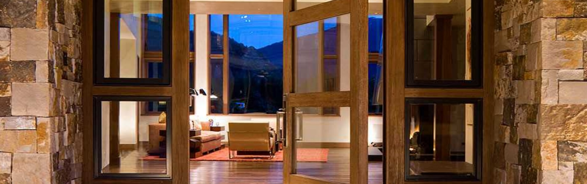
Një hyrje nuk është vetëm kalim. Është kontakti i parë me hapësirën.
Zbulo FALÇdo shtëpi ka një karakter. Ne e përkthejmë atë në ngjyrë, formë, material dhe detaje që përshtaten me arkitekturën tuaj.
Me një ekip të specializuar në dizajn dhe prodhim, ju ndihmojmë te kombinoni modelin, finiturat dhe aksesorët në një hyrje unike.
Krijo stilin tënd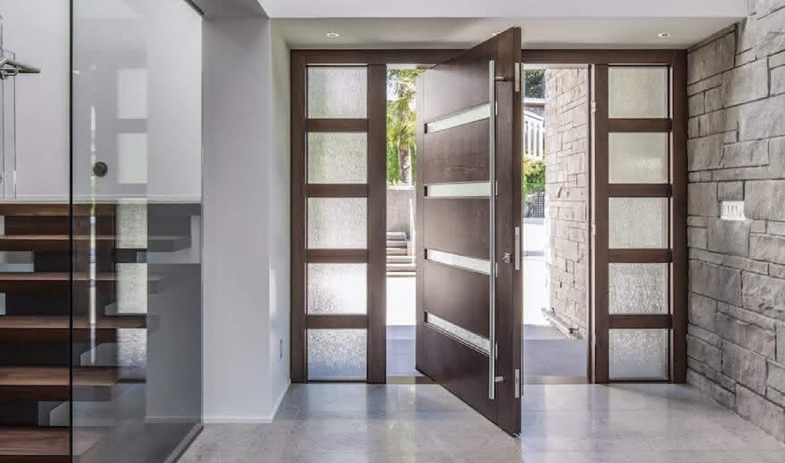
Para procesit të plotë, këto janë arsyet pse dyert tona mbajnë të njëjtin standard nga projekti i parë deri te montimi final.
Finitura, profile dhe struktura të përzgjedhura për përdorim të gjatë, siguri dhe pamje të qëndrueshme.
Shiko produktetÇdo derë lidhet me dimensionet, stilin dhe ritmin e ambientit, jo thjesht me një model standard katalogu.
Krijo hyrjenNga matjet dhe prodhimi deri te dorëzimi, procesi mbahet i qartë, i matur dhe i kontrolluar nga i njëjti ekip.
Shiko procesinZgjidhje të ndërtuara për përdorim të përditshëm, kushte të ndryshme dhe performancë të qëndrueshme në kohë.
Zbulo standardin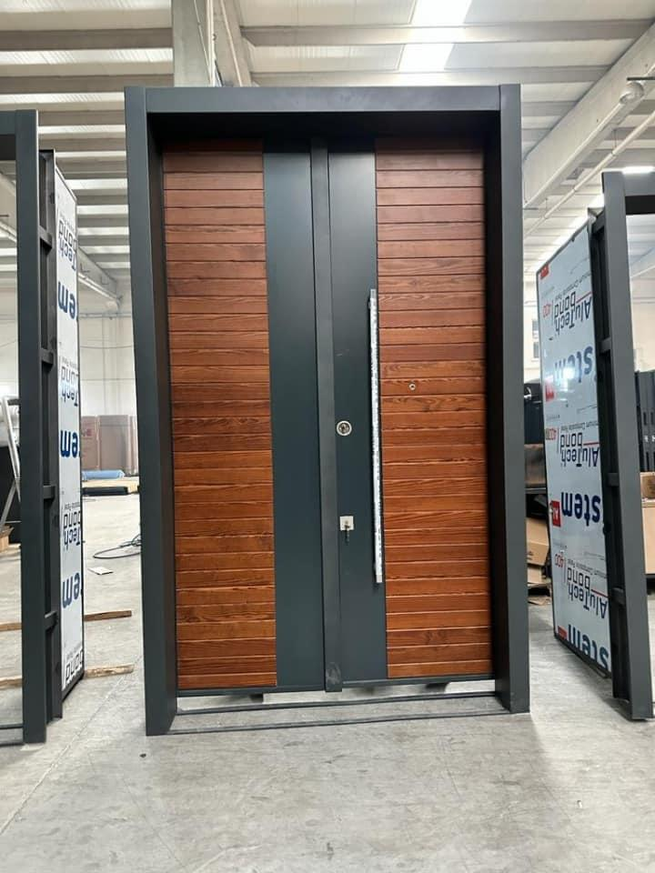
Ju ndihmojmë të zgjidhni modelin, finiturën dhe detajet pa e komplikuar projektin me zgjedhje të panevojshme.
Flisni me ekipinPërzgjedhje e kujdesshme për çdo projekt
Detaje të kontrolluara në prodhim
Siguri dhe besim afatgjatë
Nga këshillimi deri te dorëzimi
Ne FAL Doors ofrojmë shërbime të specializuara në çdo hap te projektit tuaj, nga dizajni deri te eksporti. Çdo detaj, nje standard i lartë.
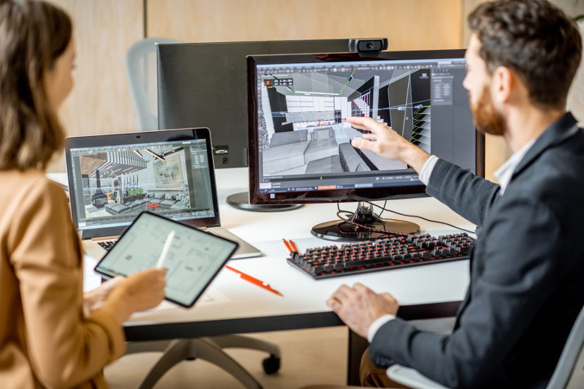
Ekipi ynë i specializuar i dizajnit krijon vepra unike, duke përdorur teknologji moderne dhe zgjidhje elegante te përshtatura sipas stilit dhe nevojës tuaj.
Mëso më shumëMe një angazhim të pakompromis për cilësinë, FAL Doors shtron themelet e prodhimit të dyerve të çdo ambienti.
Mëso më shumë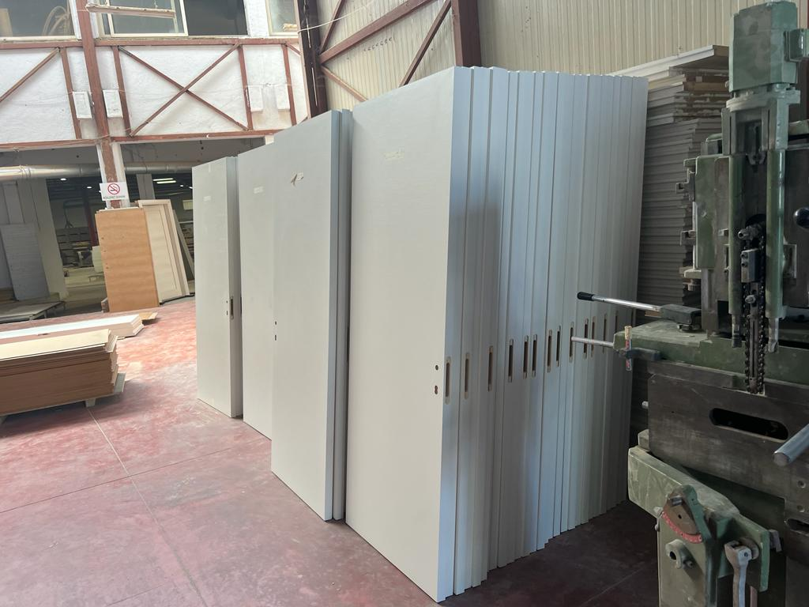
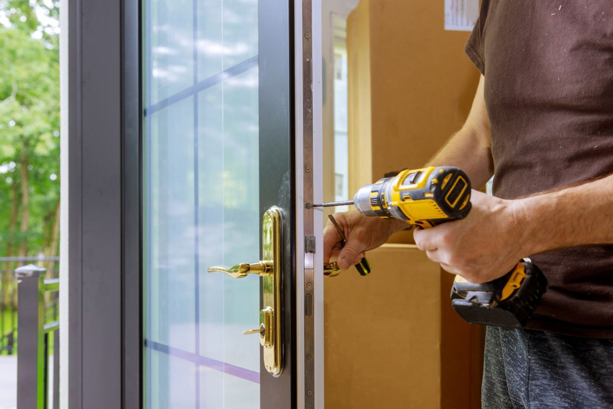
Montimi i dyerve në FAL Doors është një përkushtim i precizionit dhe kujdesit maksimal për çdo ambient.
Mëso më shumëEksporti i dyerve është shërbimi ynë i specializuar ne tregjet nderkombetare, me standarde të sigurta dhe cilësi FAL Doors.
Mëso më shumë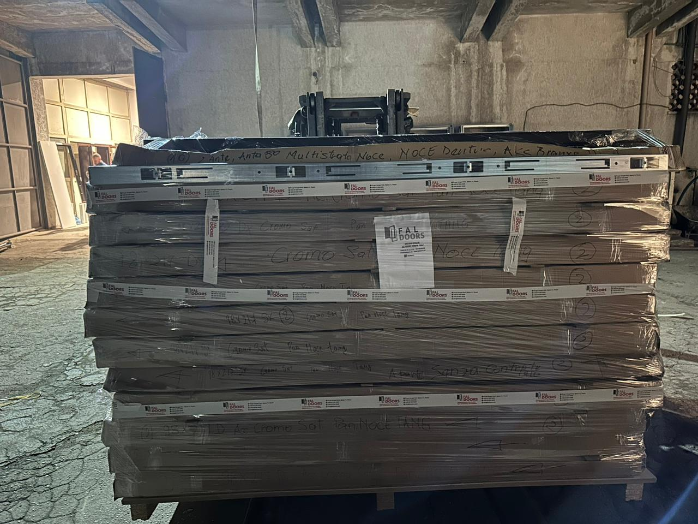
Përdorim materiale të zgjedhura me kujdes.
Siguri dhe besim afatgjatë.
Ekspertë të përkushtuar për çdo projekt.
Çdo detaj ka rëndësi, çdo herë.
Nga banesat privatë të projektet e mëdha, çdo realizim bashkon dizajnin, precizionin dhe cilësinë FAL DOORS.
Eksploro projektet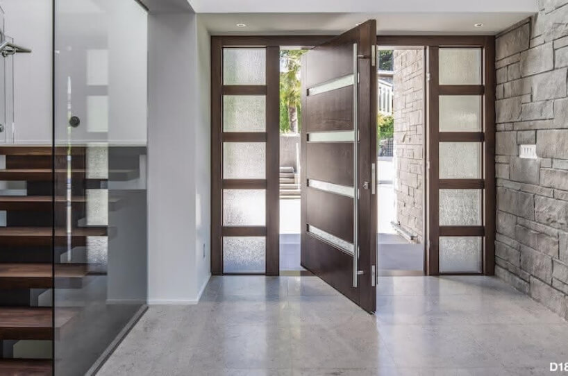
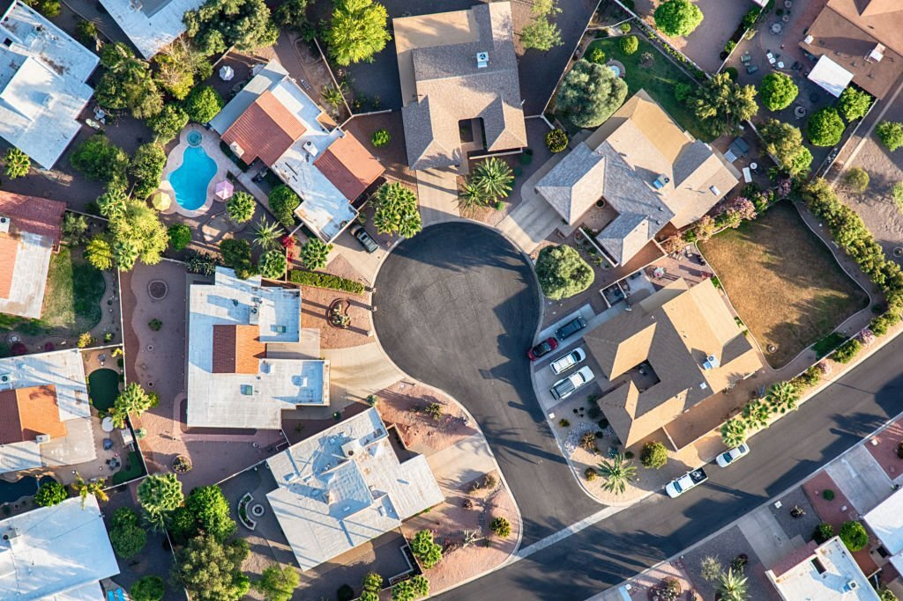
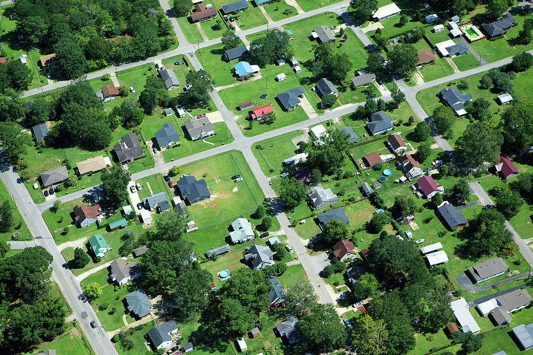
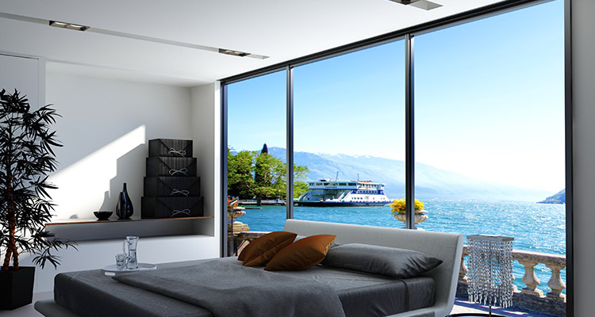
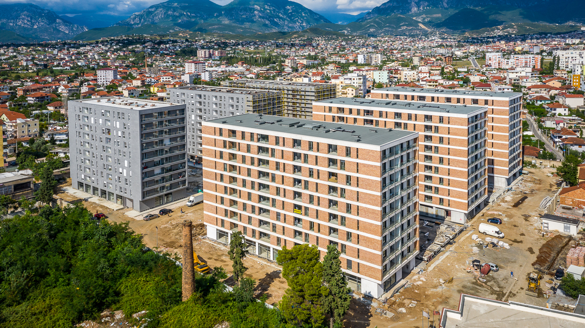
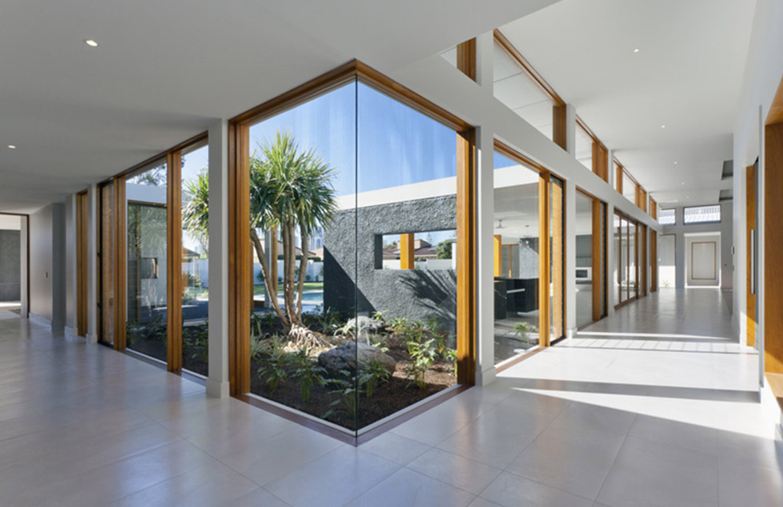

Zgjidh stilin, finiturat dhe detajet që i përshtaten projektit.
Fillo KërkesënHistori reale nga njerez dhe profesioniste që i kane besuar FAL DOORS projektin e tyre.
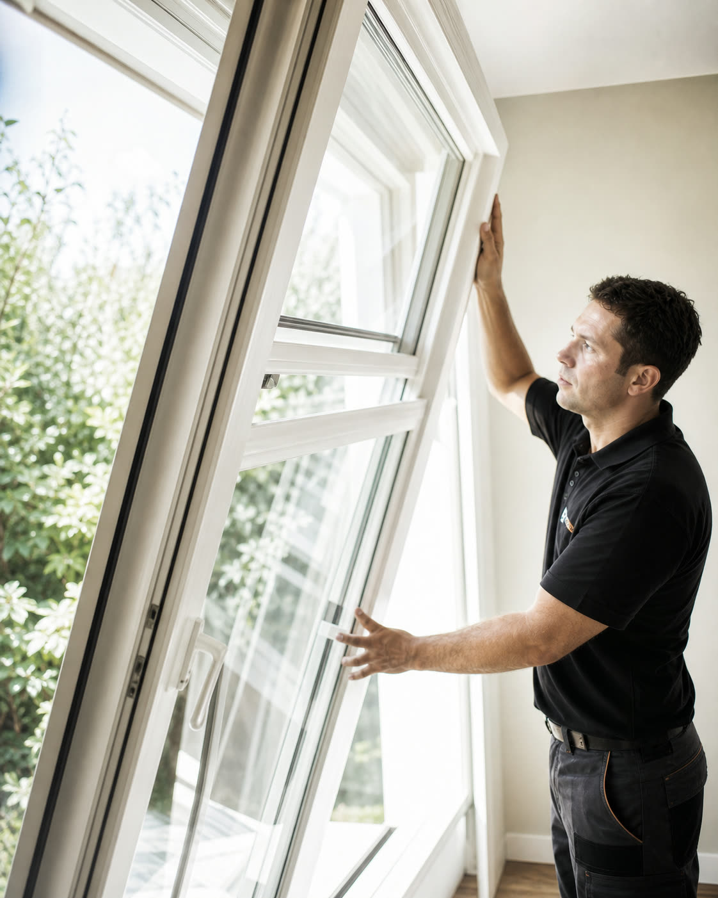
Që nga konsultimi i parë deri te montimi, çdo detaj u trajtua me kujdes. Rezultati i dha shtëpisë tonë karakterin që kërkonim.Edmond K. Shkodër, Shqipëri
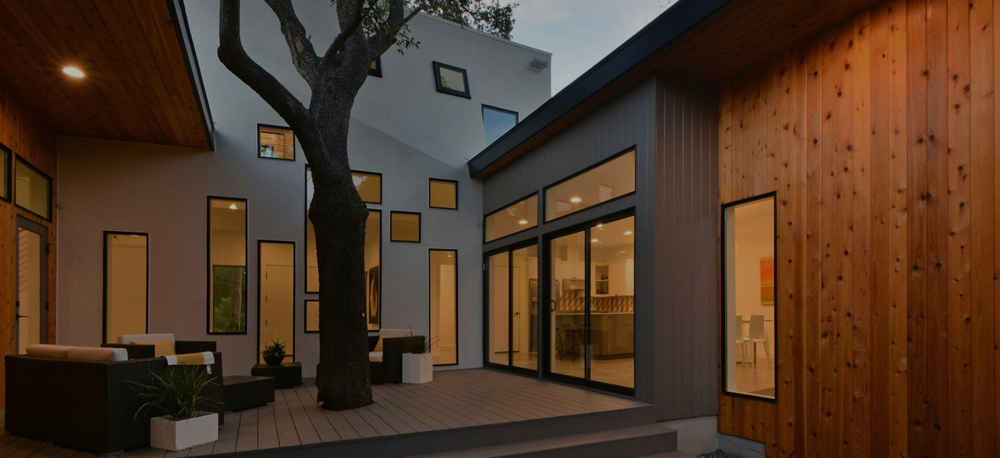
Një bashkëpunim i saktë, profesional dhe i qartë. Dera u integrua bukur me arkitekturën dhe cilësia duket në përdorim.Studio Arkitekturë Tiranë, Shqipëri
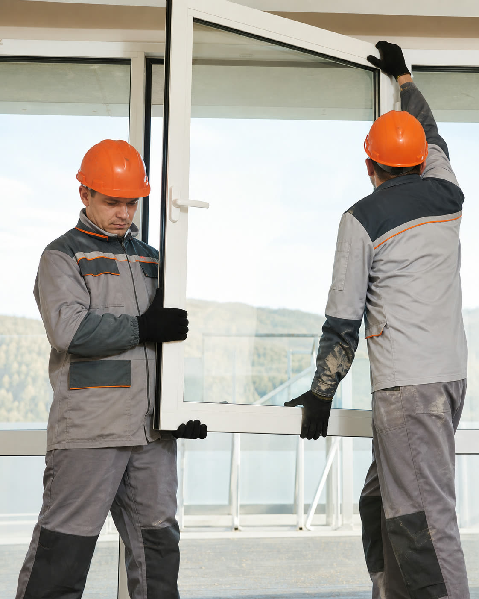
FAL Doors është një zgjedhje e shkëlqyeshme për dyer të cilësisë se lartë dhe dizajne të bukura. Dyert e tyre janë të mrekullueshme dhe cilësia është e padiskutueshme. Ekipi i tyre është i kujdesshëm dhe profesionist. Dyert e tyre kane ndryshuar plotësisht pamjen e shtëpisë sime.Arben Tiranë, Shqipëri
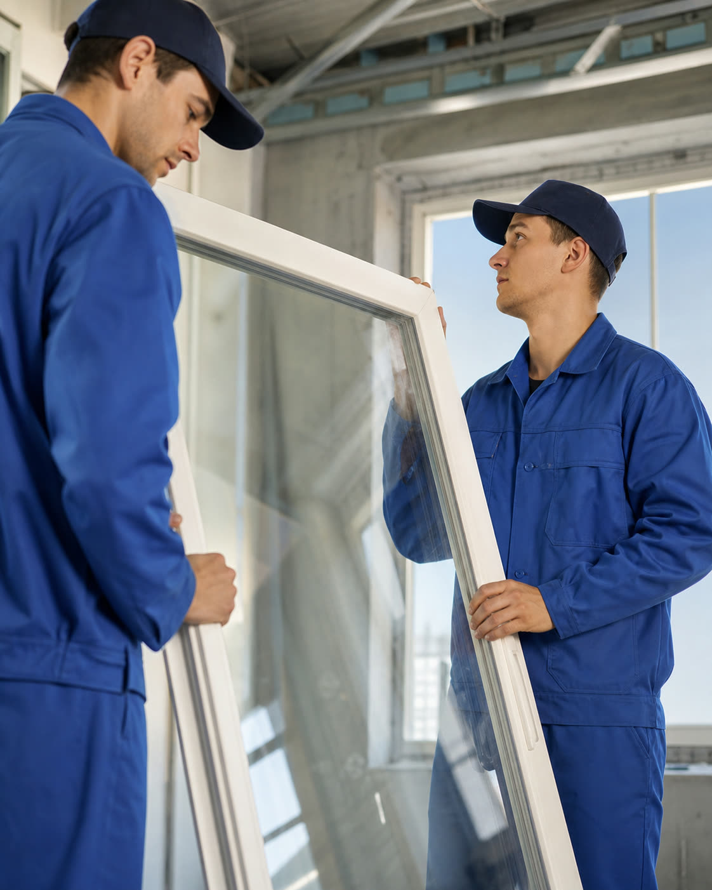
FAL Doors na ofroi një zgjedhje të mrekullueshme të dyerve për projektin tonë të ndërtimit. Dyert e tyre janë të personalizuara me kujdes dhe janë një kombinim i shkelqyeshem i funksionalitetit dhe dizajnit. Ekipi i tyre është i përkushtuar për të ofruar cilësi të jashtëzakonshme dhe në jemi të kënaqur me rezultatin përfundimtar.Laura Durrës, Shqipëri